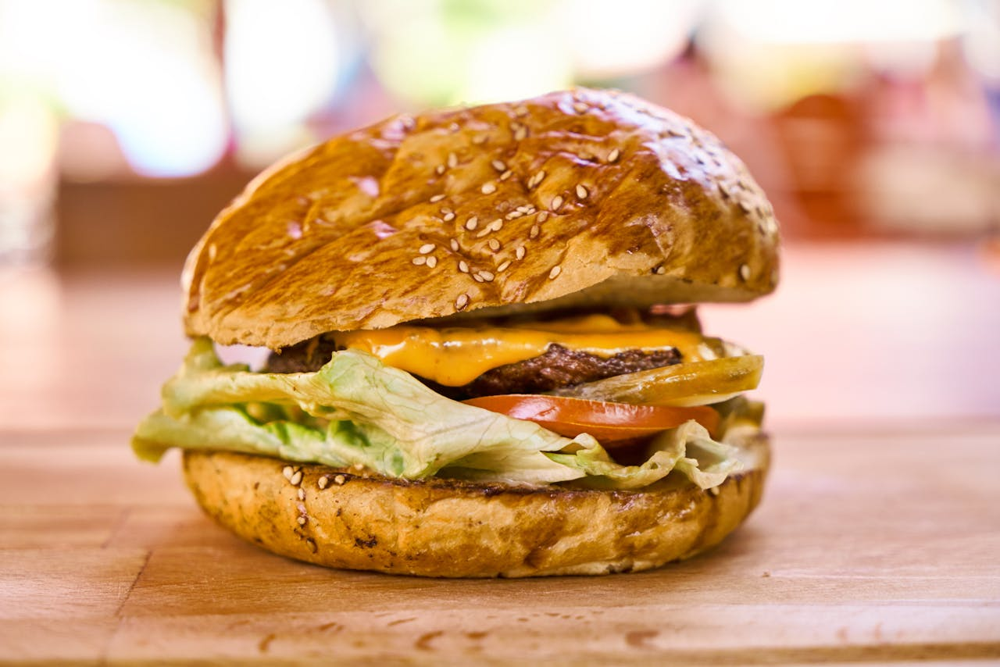

Hamburger

Best Hamburger Ever
A classic hamburger is a staple of American cuisine, beloved for its simplicity and versatility. Made with seasoned ground beef, grilled or pan-fried to perfection, and served on a toasted bun, it can be customized with a variety of toppings like cheese, lettuce, tomato, pickles, and condiments. Perfect for backyard barbecues, casual dinners, or game day snacks, the hamburger remains a favorite comfort food around the world.
Ingedients
- 1 lb ground beef (80% lean)
- Salt and pepper to taste
- 4 hamburger buns
- Optional toppings: lettuce, tomato slices, cheese slices, pickles, onions
- Ketchup, mustard, or mayonnaise (as desired)
- Butter or oil for toasting buns
Steps
- Preheat grill or skillet to medium-high heat.
- Divide the ground beef into 4 equal portions and shape into patties.
- Season both sides of the patties with salt and pepper.
- Cook the patties for about 3 to 4 minutes per side for medium doneness.
- Toast the hamburger buns lightly on the grill or skillet.
- Assemble the burgers with desired toppings and condiments.
- Serve immediately.
Home